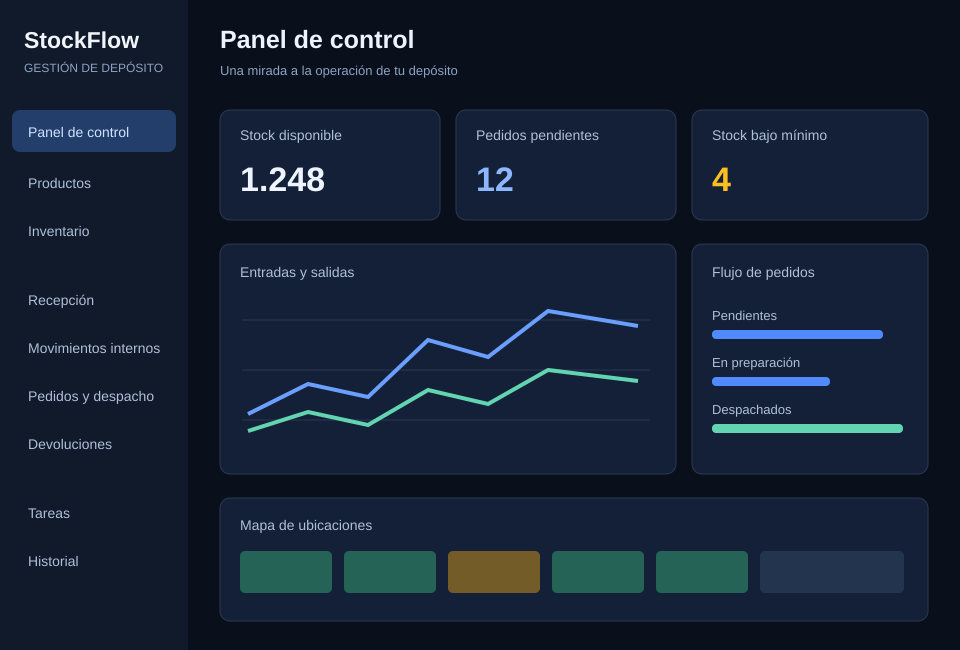

Inventario y ubicaciones
Consultá existencias físicas, reservadas y disponibles. Explorá el mapa del depósito y detectá productos por debajo del mínimo.
Explorá cómo un sistema a medida puede ayudarte a organizar la mercadería, conocer el stock disponible y acompañar cada pedido desde su preparación hasta el despacho.
Sin registro · Datos ficticios · Se abre en una pestaña nueva

Vista ilustrativa. La demo permite explorar y modificar datos de ejemplo.
Una operación conectada
Un ejemplo pensado para depósitos, distribuidoras y comercios que necesitan organizar su operación diaria.
Consultá existencias físicas, reservadas y disponibles. Explorá el mapa del depósito y detectá productos por debajo del mínimo.
Registrá remitos, almacená mercadería que está en muelle y trasladá productos entre ubicaciones con un historial de movimientos.
Creá un pedido, reservá stock y seguí las etapas de recolección, embalaje y despacho. También podés explorar devoluciones.
Organizá tareas con responsables y prioridades, revisá las operaciones registradas y explorá las exportaciones disponibles.
Tu primera prueba
Abrí Inventario y elegí un producto con stock disponible. Revisá su ubicación y sus existencias.
En Pedidos y despacho, creá un pedido para ese producto. Vas a poder ver cómo se reserva la cantidad solicitada.
Avanzá por las etapas de picking, packing y despacho. Después, consultá el registro de operaciones en Historial.
Se abre en una pestaña nueva. Esta presentación queda disponible para volver.
Pensado para tu forma de trabajar
Contanos cómo trabajás hoy. Podemos definir una solución a medida para tus productos, procesos y equipo.